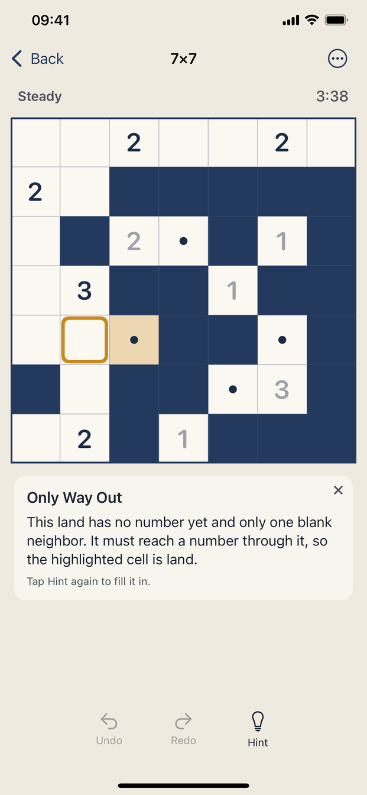
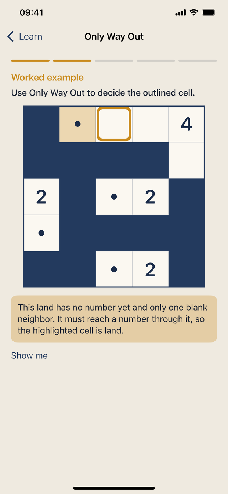
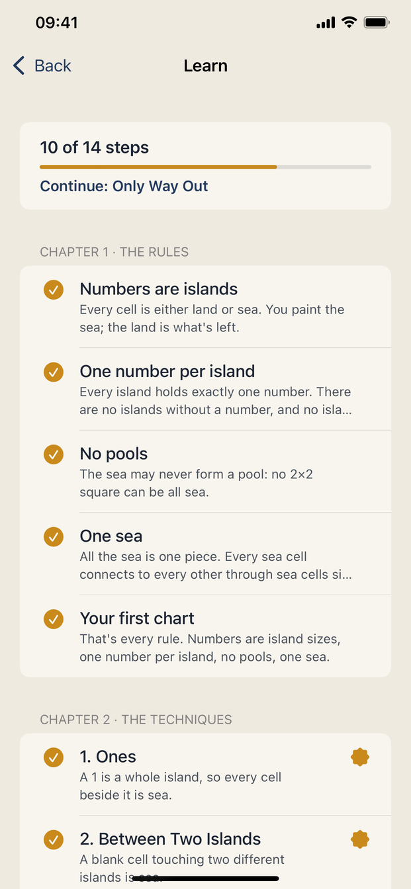
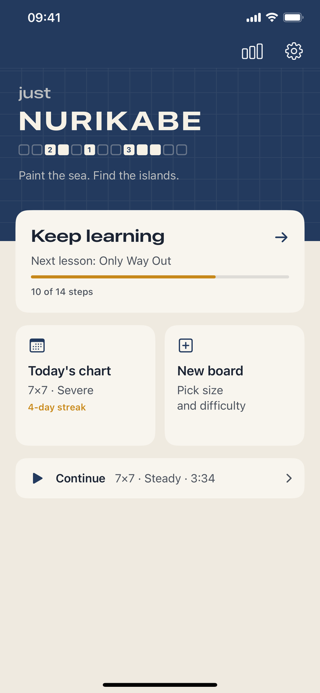
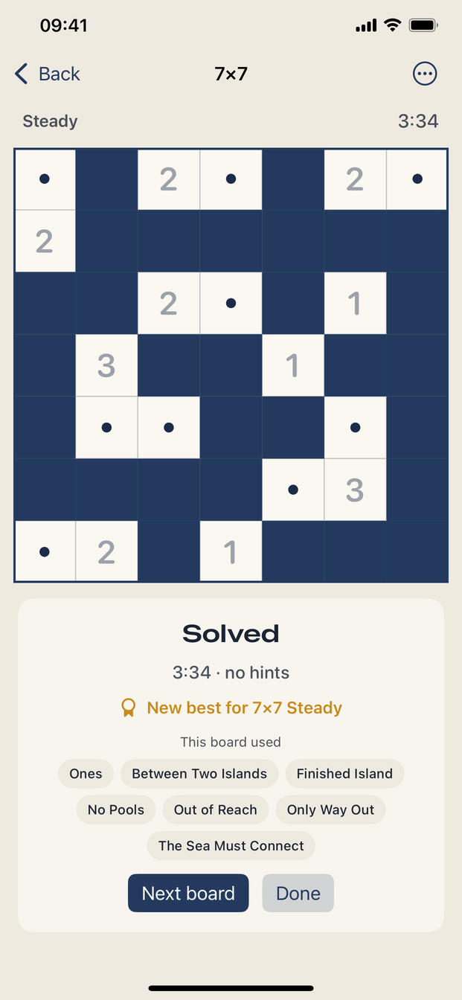

From the first rule to What If
The numbers on a Nurikabe grid are island sizes. Everything that isn't island is sea, the sea has to be one connected piece, and it may never fill a 2×2 square. Those four rules fit on a postcard. Solving a 10×10 board with them takes a handful of arguments that nobody tells you about, and this app is built to tell you.
Rules on small boards
Five short steps, one rule each. A wrong tap names the rule it broke.
Nine technique lessons
Each one states an argument, works it on a real board with the reasoning drawn, and then hands you two positions.
A hint in four taps
Where to look, what the technique is called, the argument drawn on your cells, and only then the answer.
Seals you earn
A deduction you make unaided counts toward that technique. Five of them earn its seal on the path.
Boards you can trust
Your device builds each board and proves two things before showing it: there is only one solution, and the nine techniques from the lessons reach it. You never need to guess, and if you're stuck, a named argument is waiting.
Screens





What's free and what costs $4.99
Free, with no ads: the whole rules chapter, the first five lessons, 5×5 and 7×7 boards in all five difficulties, and a daily chart with a streak.
The Full Chart is a single purchase. It adds the four advanced lessons, 10×10 boards, and in-game hints that name and draw their argument. It is shareable with Family Sharing, and there's no subscription.
Privacy
Just Nurikabe collects no data at all. Your progress stays on your device. The full policy is on the privacy page.
Help
My purchase isn't showing
Open Settings in the app and tap Restore purchase while signed in with the Apple Account that bought it.
Can I play on a plane?
Yes. Boards are made on the device, so nothing needs a connection except buying or restoring.
A board seems impossible
Tap Hint until it names a technique, then open that lesson from the path. If a board still looks wrong, mail me a screenshot and I'll look at it.
Anything else
Write to kai.kunze@gmail.com.